喵喵照護管家
- 1開啟喵喵照護管家
- 2填食物克數和水量（ml）
- 3按下儲存
水量不用非常精準。用3 ml或5 ml針筒餵完後，扣掉剩餘與大概流掉的量，記錄約喝下幾ml即可。
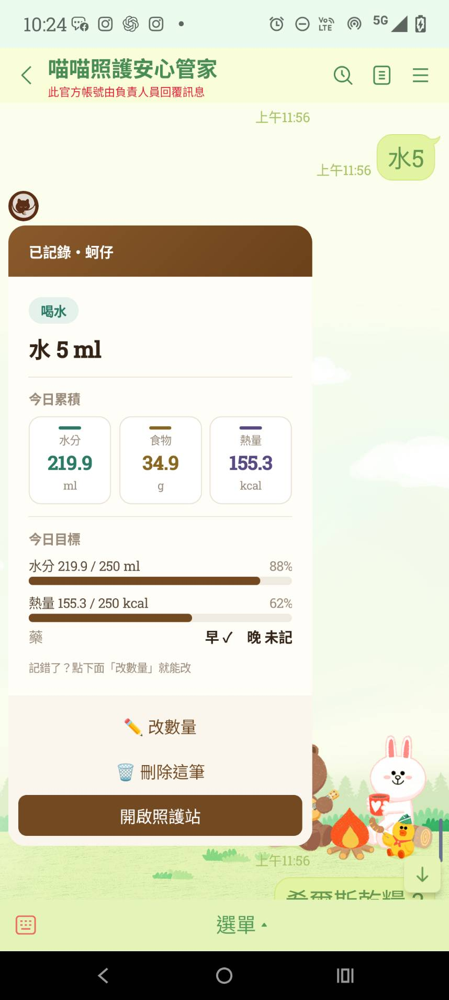
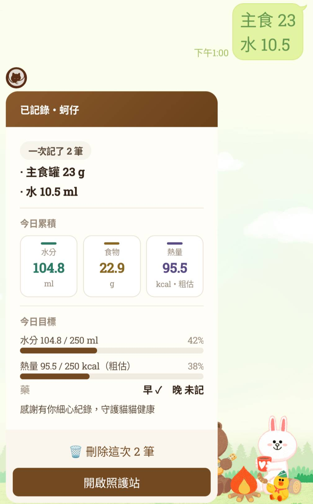
餵食或餵水後，方便的話幫我在「喵喵照護管家」記下食物克數和水的ml數即可，不用記時間，謝謝你。
依時間往下看，點開需要的內容。
鑰匙・找蚵仔・看一下狀況
罐罐2～3次・乾乾早晚・藥早晚
餵藥：早晚各一次，每次2顆（橘白1顆＋粉紅白1顆）。約10點即可，不用卡很準。
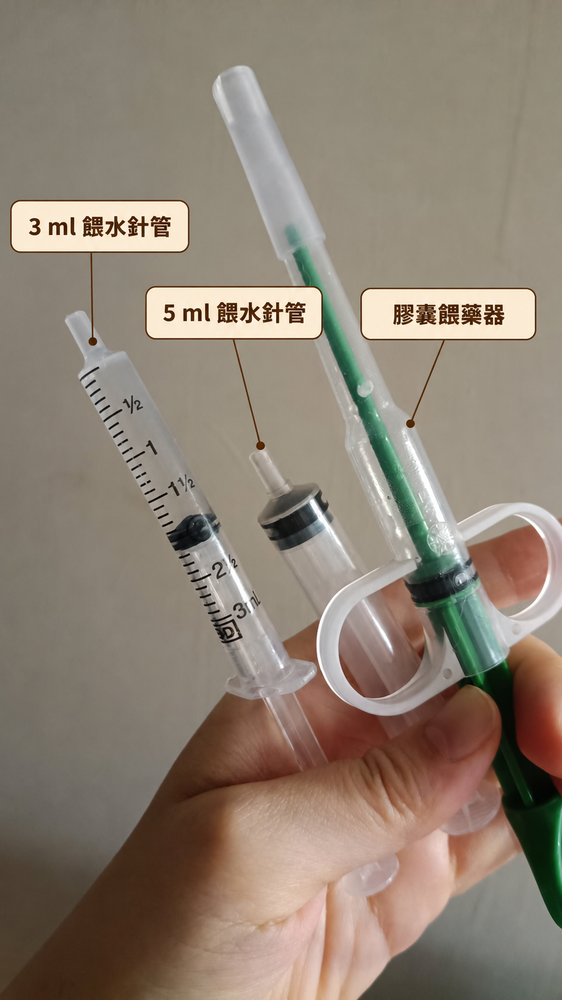
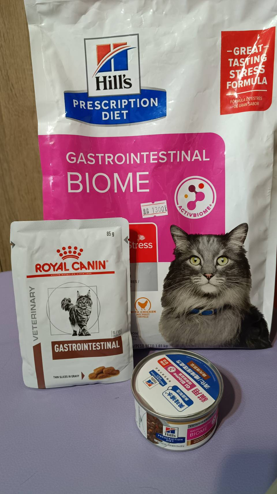
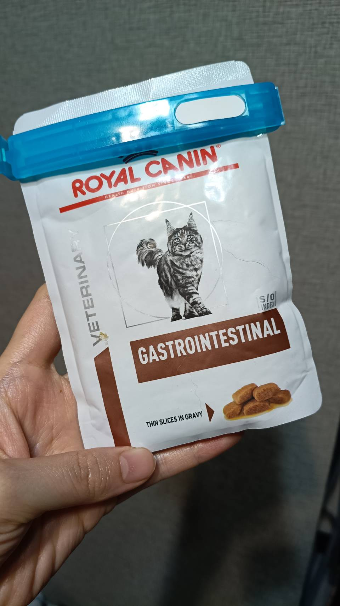
蚵仔現在的腸胃比較敏感，餵照片裡的食物就可以了，謝謝你。
早晚各餵一次，每次共2顆：橘白色1顆＋粉紅白色1顆。建議約早上10點與晚上10點，不用太嚴格限制時間。
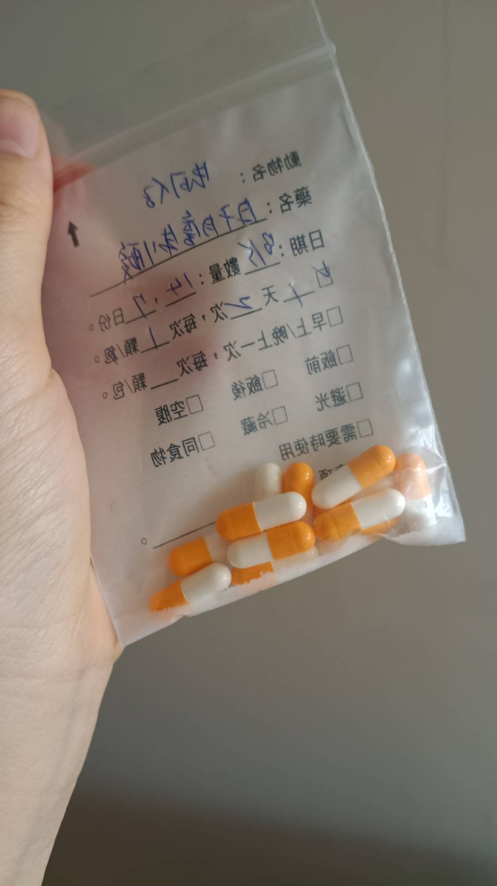
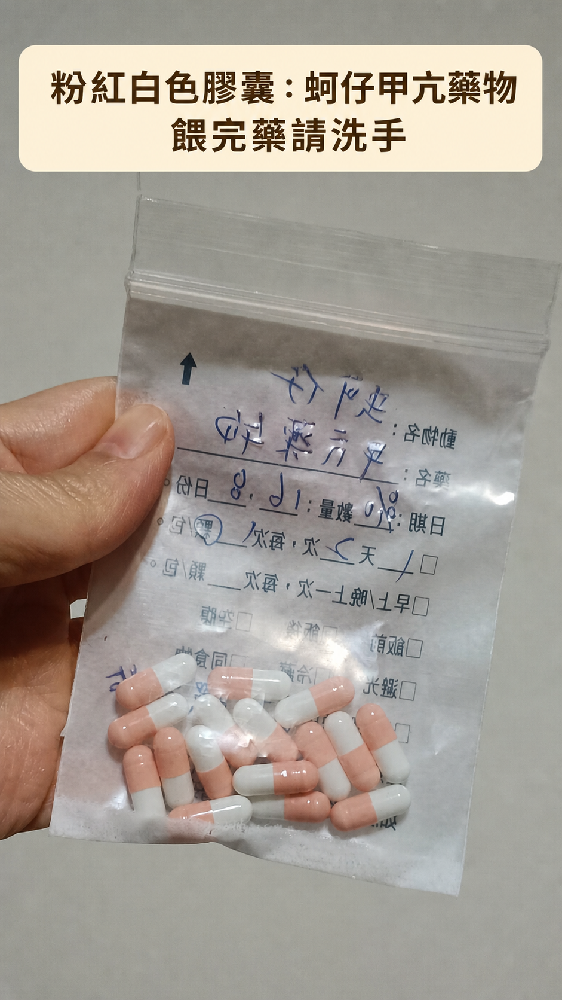
熱水溫度比較高，拌好後稍微放涼再給蚵仔，謝謝你。
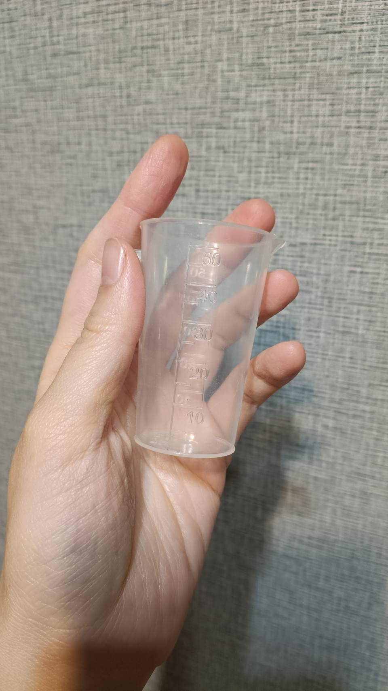
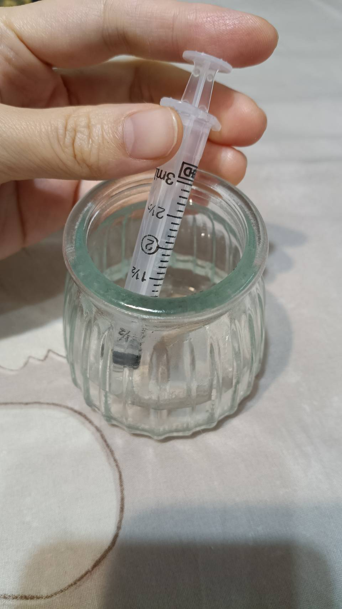
貓砂・益生菌・乾乾・水・鑰匙
先鎖好門，再把鑰匙用原本信封包好、放回郵箱。
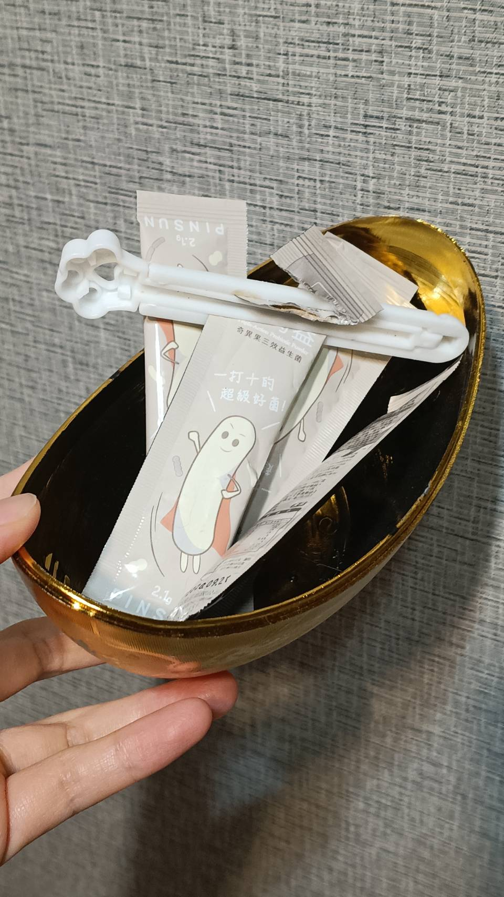
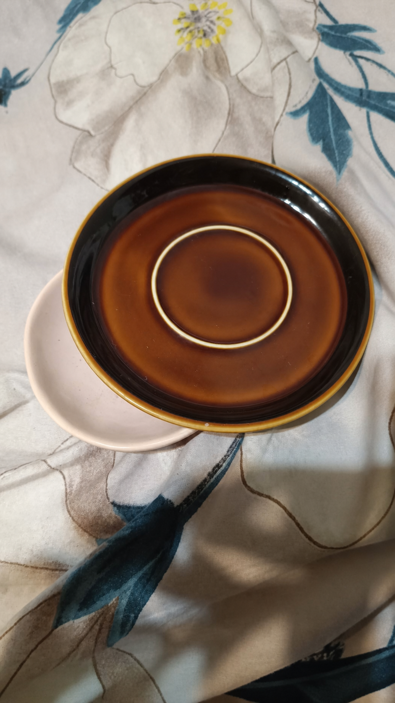
水量不用非常精準。用3 ml或5 ml針筒餵完後，扣掉剩餘與大概流掉的量，記錄約喝下幾ml即可。


依日期查看照護者與時段。
如果看到嘔吐、拉肚子、沒吃、沒有排泄、沒餵到藥水，或和平常不太一樣，LINE跟青青說一聲就好。
如果看到呼吸不順、倒下、叫不醒、持續抽搐或大量流血，麻煩立刻用 LINE 聯絡青青，謝謝。